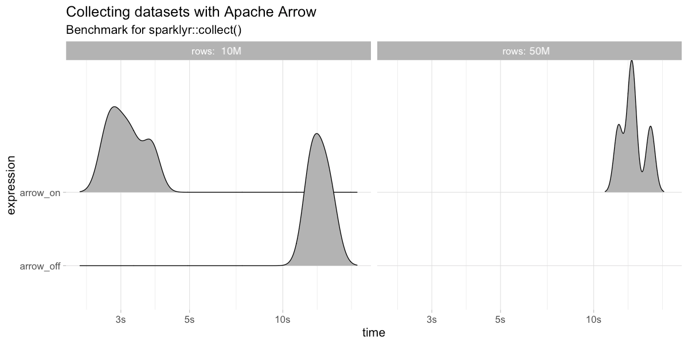

2019-03-15
With much excitement built over the past three years, we are thrilled to share that sparklyr 1.0 is now available on CRAN!
The sparklyr package provides an R interface to Apache Spark. It supports dplyr, MLlib, streaming, extensions and many other features; however, this particular release enables the following new features:
This release also brings support for Spark 2.4, the ability to collect and copy in batches, increased Livy performance, and many more improvements listed in the sparklyr NEWS file. You can install sparklyr 1.0 from CRAN as follows:
install.packages("sparklyr")Apache Arrow is a cross-language development platform for in-memory data, you can read more about this in the Arrow and beyond blog post. In sparklyr 1.0, we are embracing Arrow as an efficient bridge between R and Spark, conceptually:
<img src=“2019-03-15-sparklyr-1-0-sparklyr-arrow-spark.png” width=“70%”” alt=“sparklyr using Apache Arrow diagram”/>
In practice, this means faster data transfers and support for larger datasets; specifically, this improves collect(), copy_to() and spark_apply(). The following benchmarks make use of the bench package to measure performance with and without arrow.
We will first benchmark copy_to() over a dataframe with 1M and 10M rows. Notice that, with the default memory configuration, copy_to() can’t handle 10M rows while arrow can.
library(sparklyr)
sc <- spark_connect(master = "local")
bench::press(rows = c(10^6, 10^7), {
bench::mark(
arrow_on = {
library(arrow)
sparklyr_df <<- copy_to(sc, data.frame(y = 1:rows), overwrite = T)
},
arrow_off = if (rows <= 10^6) {
if ("arrow" %in% .packages()) detach("package:arrow")
sparklyr_df <<- copy_to(sc, data.frame(y = 1:rows), overwrite = T)
} else NULL, iterations = 4, check = FALSE)
})
Next, we will benchmark collect() over 10M and 50M records; collecting 50M+ records is only possible with arrow.
bench::press(rows = c(10^7, 5 * 10^7), {
bench::mark(
arrow_on = {
library(arrow)
collected <- sdf_len(sc, rows) %>% collect()
},
arrow_off = if (rows <= 10^7) {
if ("arrow" %in% .packages()) detach("package:arrow")
collected <- sdf_len(sc, rows) %>% collect()
} else NULL, iterations = 4, check = FALSE)
})
Last but not least, spark_apply() over 100K and 1M rows shows the most significant improvements. A 40x speedup when running R on Spark, additional details are available in the Arrow project post.
bench::press(rows = c(10^5, 10^6), {
bench::mark(
arrow_on = {
library(arrow)
sdf_len(sc, rows) %>% spark_apply(~ .x / 2) %>% dplyr::count() %>% collect
},
arrow_off = if (rows <= 10^5) {
if ("arrow" %in% .packages()) detach("package:arrow")
sdf_len(sc, rows) %>% spark_apply(~ .x / 2) %>% dplyr::count() %>% collect
} else NULL, iterations = 4, check = FALSE)
})
To use arrow, you will first have to install the Apache Arrow runtime followed by installing the R arrow package, additional instructions are available under spark.rstudio.com/guides/arrow.
sparkxgb is a new sparklyr extension that can be used to train XGBoost models in Spark. sparkxgb is available on CRAN and can be installed as follows:
install.packages("sparkxgb")We can then use xgboost_classifier() to train and ml_predict() to predict over large datasets with ease:
library(sparkxgb)
library(sparklyr)
library(dplyr)
sc <- spark_connect(master = "local")
iris <- copy_to(sc, iris)
xgb_model <- xgboost_classifier(iris,
Species ~ .,
num_class = 3,
num_round = 50,
max_depth = 4)
xgb_model %>%
ml_predict(iris) %>%
select(Species, predicted_label, starts_with("probability_")) %>%
glimpse()#> Observations: ??
#> Variables: 5
#> Database: spark_connection
#> $ Species <chr> "setosa", "setosa", "setosa", "setosa", "…
#> $ predicted_label <chr> "setosa", "setosa", "setosa", "setosa", "…
#> $ probability_versicolor <dbl> 0.003566429, 0.003564076, 0.003566429, 0.…
#> $ probability_virginica <dbl> 0.001423170, 0.002082058, 0.001423170, 0.…
#> $ probability_setosa <dbl> 0.9950104, 0.9943539, 0.9950104, 0.995010…You can read more about sparkxgb under its README file. Note that Windows is currently unsupported.
While support for broom in Spark through sparklyr has been under development for quite some time, this release marks the completion of all modeling functions. For instance, we can now augment using an ALS model with ease:
movies <- data.frame(user = c(1, 2, 0, 1, 2, 0),
item = c(1, 1, 1, 2, 2, 0),
rating = c(3, 1, 2, 4, 5, 4))
copy_to(sc, movies) %>%
ml_als(rating ~ user + item) %>%
augment()# Source: spark<?> [?? x 4]
user item rating .prediction
<dbl> <dbl> <dbl> <dbl>
1 2 2 5 4.86
2 1 2 4 3.98
3 0 0 4 3.88
4 2 1 1 1.08
5 0 1 2 2.00
6 1 1 3 2.80sparktf is a new sparklyr extension allowing you to write TensorFlow records in Spark. This can be used to preprocess large amounts of data before processing them in GPU instances with Keras or TensorFlow. sparktf is now available on CRAN and can be installed as follows:
install.packages("sparktf")You can simply preprocess data in Spark and write it as TensorFlow records using spark_write_tf():
library(sparktf)
library(sparklyr)
sc <- spark_connect(master = "local")
copy_to(sc, iris) %>%
ft_string_indexer_model(
"Species", "label",
labels = c("setosa", "versicolor", "virginica")
) %>%
spark_write_tfrecord(path = "tfrecord")You can then use TensorFlow and Keras from R to load this recordset and train deep learning models; for instance, using tfrecord_dataset(). Please read the sparktf README for more details.
When connecting to Spark running in YARN, RStudio’s connection pane can now launch YARN’s web application.
We also made it possible to copy and collect larger datasets by using callbacks. For instance, you can collect data incrementally in batches of 100K rows; this is configurable through the sparklyr.collect.batch setting. The following example collects 300K rows using batches and prints the total records collected; in practice, you save and load from disk.
sdf_len(sc, 3 * 10^5) %>% collect(
callback = ~message("(", .y, ") Collecting ", nrow(.x), " rows.")
)(1) Collecting 100000 rows.
(2) Collecting 100000 rows.
(3) Collecting 100000 rows.For Livy connections, performance is improved when setting the spark_version parameter in livy_config(), this allows sparklyr to start a connection using JARs instead of loading sources.
In addition, extensions are now also supported in Livy. For example, you can run pagerank with Livy and graphframes as follows:
library(graphframes)
library(sparklyr)
livy_service_start()
sc <- spark_connect(master = "local", method = "livy", version = "2.4.0")
gf_pagerank(gf_friends(sc), tol = 0.01, reset_probability = 0.15)GraphFrame
Vertices:
Database: spark_connection
$ id <chr> "f", "g", "a", "e", "d", "b", "c"
$ name <chr> "Fanny", "Gabby", "Alice", "Esther", "David", "Bob", "Charlie"
$ age <int> 36, 60, 34, 32, 29, 36, 30
$ pagerank <dbl> 0.3283607, 0.1799821, 0.4491063, 0.3708523, 0.3283607, 2.6555078, 2.6878300
Edges:
Database: spark_connection
$ src <chr> "a", "b", "e", "e", "c", "a", "f", "d"
$ dst <chr> "b", "c", "f", "d", "b", "e", "c", "a"
$ relationship <chr> "friend", "follow", "follow", "friend", "follow", "friend", "follow", "friend"
$ weight <dbl> 0.5, 1.0, 0.5, 0.5, 1.0, 0.5, 1.0, 1.0The sparklyr NEWS contains a complete list of changes and features for this release. To catch up on previously released features, you can read the blog posts that got us here:
We hope you enjoy this exciting release!